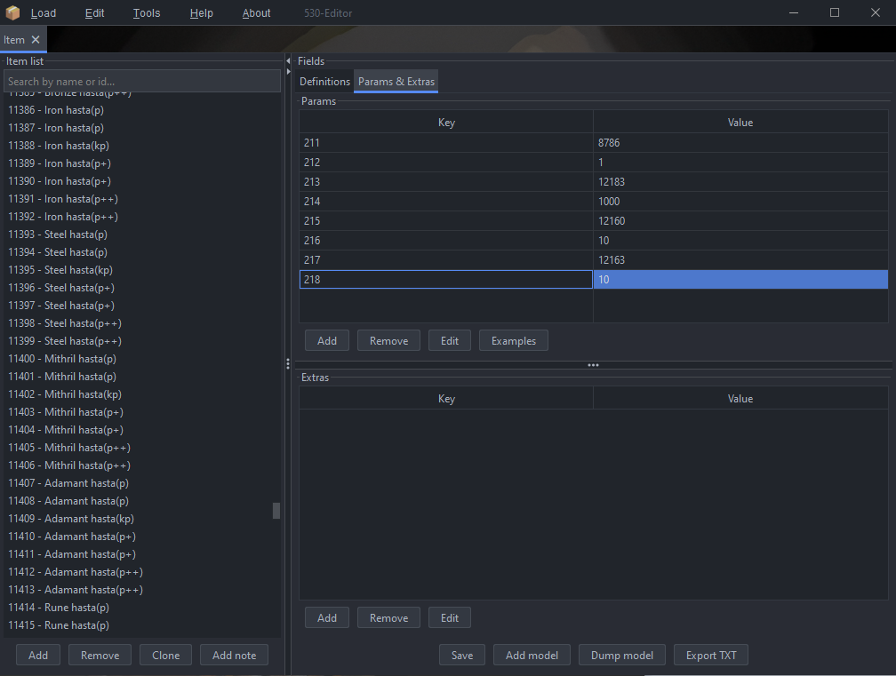

Cache Editor
Screenshots
{kind=link}
{kind=link}
{kind=link}
{kind=link}
{kind=link}
{kind=link}
{kind=link}
{kind=link}
{kind=link}
Overview
This is a comprehensive cache management suite designed for revision 530, developed entirely in Kotlin. It offers an intuitive interface and streamlined workflows for viewing, editing, and managing various game definitions. The project is non-profit and created purely for personal and hobby purposes. It aims to assist the community with cache editing and content management, and is not affiliated with any official game developers.
Core features
The suite currently provides the following editors, each specialized for different aspects of game content:
- Item Editor: Manage item definitions including stats, models, and properties.
- NPC Editor: Edit NPC data.
- Object Editor: Adjust in-game objects, their interactions.
- Sprite Editor: Import, export, and modify sprite graphics, including multi-frame sprites.
- Interface Editor (temporarily disabled): Planned for editing UI components, interface layouts, and widget data.
- Enum Editor (Configs): Manage and edit configuration enums, allowing full control over game data mappings.
Additional functionality
Beyond basic editing, the suite includes features to streamline workflow and ensure data integrity:
- Automatic caching and file management for safe edits
- Real-time previews for sprites and objects
- Metadata generation for items, NPCs, and sprites
- Export options to JSON/CSV for community sharing or backup
- Multi-tab interface for editing multiple definitions simultaneously
Utility
The suite also includes several standalone helper tools that enhance editing and management workflows:
- ModelPacker: Pack and optimize 3D models for use in cache.
- ModelExporter: Export 3D models from cache into usable external formats.
- RegionTransfer: Transfer or migrate region data between cache versions.
- ColorPicker: Pick and preview colors used in sprites and UI components.
- FileManager: Organize and manage cache files efficiently.
- IndexTransfer: Update or migrate index files for cache structures.
Future plans
All planned editors will eventually be integrated, providing a full-featured cache editing environment. The Interface Editor will be re-enabled, and additional tools will continue to be added to support complete cache management for hobbyist developers, players.
Bug reports & feature requests
Any bugs, issues, or feature requests can be safely reported on the GitHub page: https://github.com/szumaster3/Server-530/issues . Feedback is highly encouraged to improve the editor and its tools.